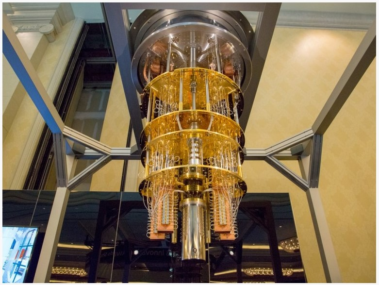
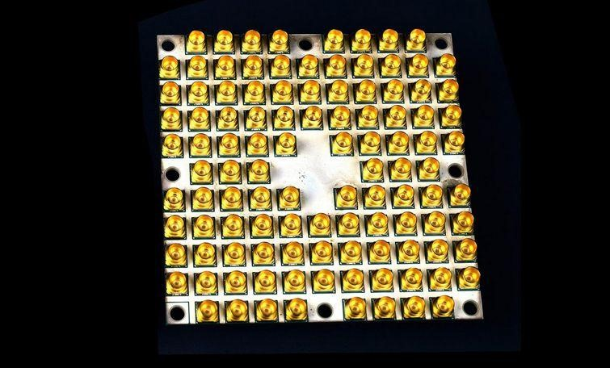

Новости о квантовых компьютерах
-
Микросхемы для квантовых вычислений Intel
Intel, как ведущий производитель микропроцессоров в мире, тоже работает над созданием микросхем для квантовых вычислений. Компания применяет два различных подхода. Одно из этих направлений проводится совместно с ведущим голландским пионером квантовых вычислений QuTech.
17 ноября 2017 года Intel объявила о поставке своему партнеру в Нидерландах тестового чипа на 17 кубитов. Затем, в январе 2018 года на выставке CES, компания объявила о поставке тестового квантового процессора на 49 кубитов под названием Tangle Lake.
Второе направление исследований Intel в области квантовых вычислений проводится исключительно внутри компании и включает в себя создание процессоров на основе технологии, называемой «спиновой кубит». Это важное нововведение, поскольку чипы спиновых кубитов производятся с использованием традиционных методов изготовления кремния Intel. В июне 2018 года Intel сообщила, что начала тестирование 26-спинового кубитного чипа.
Спиновые кубиты Intel имеют диаметр всего около 50 нанометров, или 1/1500 ширины человеческого волоса. Это означает, что, возможно, через десять лет Intel сможет производить крошечные квантовые процессоры, содержащие тысячи или миллионы кубитов. В отличие от обычных процессоров, их нужно охлаждать почти до абсолютного нуля. Но потенциал поистине захватывающий. Согласно разделу сайта Intel, посвященному квантовым вычислениям, компания нацелена на производство квантовых процессоров в течение десяти лет и ожидает, что технология начнет входить в свою «коммерческую фазу» примерно в 2025 году